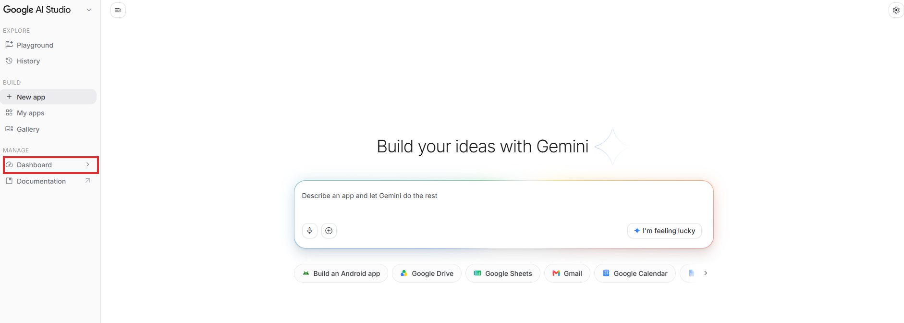
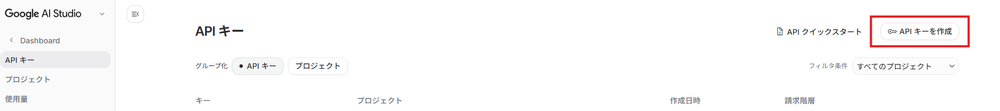
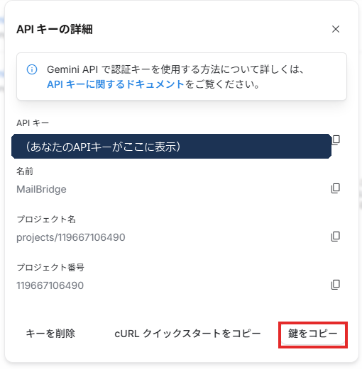
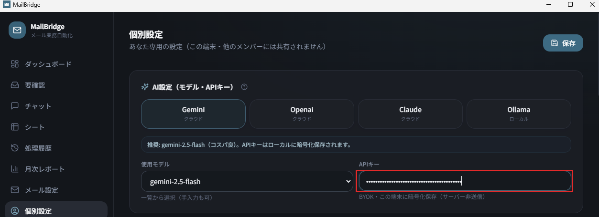

どのAPIを選べばいい？
3つの特徴をくらべました。はじめての方は Gemini から始めるのが安心です。
所要時間
約5分
費用
無料（無料枠内）
クレカ登録
不要
1
Google AI Studio を開き「Dashboard」をクリック
aistudio.google.com を開き、Googleアカウント（GmailのアカウントでOK）でログイン。左メニューの下のほう「MANAGE」にある 「Dashboard」（赤枠）をクリックします。

2
「APIキーを作成」をクリック
「API キー」の画面が開きます。右上の 「APIキーを作成」（赤枠）を押します。

3
名前を付けて「キーを作成」
キー名（例：MailBridge）を入力し、プロジェクトを選んで 「キーを作成」（赤枠）を押します。プロジェクトは表示されているものでOKです。

4
「鍵をコピー」でキーをコピー
APIキーが表示されます。右下の 「鍵をコピー」（赤枠）でコピーしてください（下の図ではキー部分を伏せています）。

このキーはパスワードと同じです。人に見せたり、メール・チャット・スクショで共有しないでください。
5
MailBridgeの個別設定に貼り付け
MailBridgeで 個別設定 →「AI設定（モデル・APIキー）」を開き、プロバイダで Gemini を選択、使用モデルは gemini-2.5-flash、APIキー欄（赤枠）にコピーしたキーを貼り付けて 保存。キーはこの端末内だけに保存されます（サーバー非送信）。

注意：APIキーはパスワードと同じです。他人に教えたり、メール・チャットに貼って共有しないでください。
API料金を試算する →
あなたのメール量だと月いくら？シミュレーターで確認。
PCスペックの見方 →
APIを使わず、無料のローカルAIで動かしたい方へ。